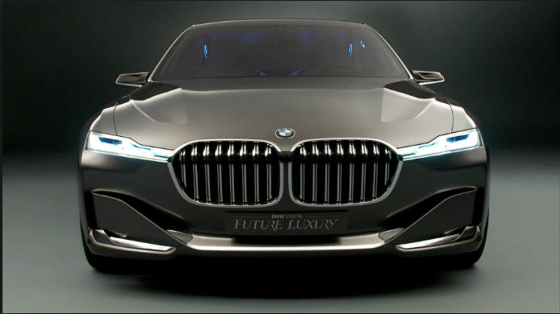
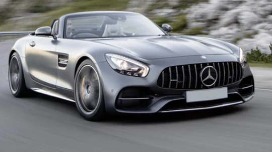
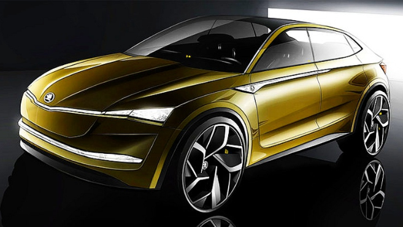
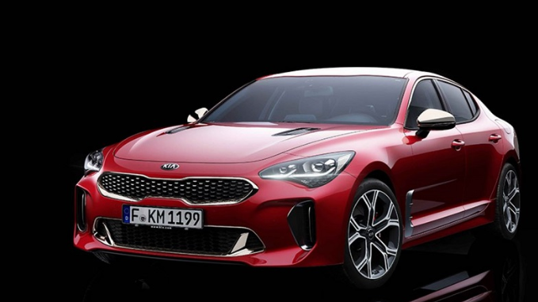
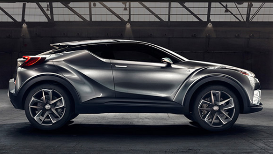

M.A_F.E cars

بي إم دبليو شركة ألمانية لصناعة السيارات والمحركات والدراجات النارية، تأسست رسميًا في عام 1916، مقرها الرئيسي في مدينة ميونخ بمقاطعة بفاريا، ولكن الأصول الحقيقية لتأسيس اسم الشركة تعود إلى عام 1880 عندما كانت الشركة الممولة لسلاح الطيران الألماني في ذلك الوقت، ويعتبر كل من كارل وغوستافو أوتو المؤسسين الأوليين لهذه الشركة. تمتلك بي إم دبليو سيارات شركتي رولز رويس وميني، وتعـد أكبر المنافسين للسيارات الألمانية الأخرى ذات الشعبية الكبيرة مثل مرسيدس وأودي وفولكس فاجن ومايباخ وسمارت، ففي السنوات الأخيرة زادت مبيعات الشركة من خلال 1.7 مليون سيارة وزعت حول العالم من النماذج المختلفة وفي ذات الوقت تأتي بي إم دبليو ثالثًا بعد بورشة وتويوتا من حيث الأرباح حيث بلغ معدل أرباحها 8 %. يتكون شعار الشركة من حلقة سوداء تحتوي على الأحرف بي إم دبليو تتوسطها دائرة مقسمة إلى أربع أقسام ملونة بالأزرق والأبيض وهي ألوان علم مقاطعة بافاريا، وهو الشعار الرئيسي للشركة الذي لم يتغير أبدًا منذ تأسيسها.

سيارة مرسيدس بنز من السيارت التي أنتجتها شركة مرسيدس، التي تعد من الشركات الرائدة في صناعة السيارات و التي تقدم تنوع كبير في الأصناف التي تنتجها، حيث تتناسب مختلف اصدارات مرسيدس مع كافة متطلبات المستخدمين، و ما يميز سيارات مرسيدس عن غيرها القوة و المتانة و دقة التصنيع، حيث أنه من النادر أن يصدر فئة تمتلك عيوب مصنعية، وهنا سوف نتعرف على أهم مميزات وسلبيات سيارة مرسيدس بنز. إن جميع فئات مرسيدس تمتلك مقصورة أنيقة و فخمة و يسهل التعامل معها.
تتوفر داخل السيارة المساحة الكافية و المريحة للسائق و الركاب.
أما بالنسبة للإضافات فتتفاوت مختلف الفئات فيما بينه، و كذلك يعتمد الأمر على طلب العملاء.
بشكل عام توفر مرسيدس لمستخدميها أحدث و أفضل الإضافات مثل، كاميرات أمامية و خلفية و جانبية و شاشات بتقنية فائقة الجودة، بلوتوث و واي فاي لربط مختلف أنواع الأجهزة الشخصية.
أنظمة مساندة للسائق أثناء القيادة، وحساسات حركة على جسم السيارات و حساسات فنية للكشف عن الأعطال..

تم تحديث المصابيح الأمامية لتصبح مقسمة إلى نصفين، كما جاءت بتقنية الإضاءة LED.
تحتوى السيارة على شبك أمامى أكثر متانة ومقسم إلى نصفين وبه عدد من الخطوط السوداء الرياضية لإكسابها لمسة رياضية جذابة.
جاءت مصابيح الضباب أسفل المصد بشكل أفقى بدلا من الشكل الدائرى.
تحتوى على اسطبات من الخلف مستطيلة الشكل على حرف C.
توجد بعض الزوايا الحادة على الصندوق الخلفى لإعطائها منظرا جذابا.
تحتوى على شاشة كبيرة الحجم بمقاس 9.8 بوصة لعرض المعلومات الخاصة بالقيادة.
يمكن الإتصال بشبكة الإنترنت من خلال الشاشة الإلكترونية.
جاءت عجلة القيادة بتصميم ثلاثى الأبعاد على شكل رياضى.
تحتوى على كونسول وسطى عريض الحجم.
تتوفر سكودا اوكتافيا بعدد من المحركات.
سعة المحرك الأول 1.0 لتر بقوه 113 حصان.
أما سعة المحرك الثانى 1.4 لتر بقوة 148 حصان ويحتوى على 4 سليندرات.
أما المحرك الأخير جاء بسعة 1.6 لتر وبقوه 113 حصان، كما يحتوى على ناقل حركة 6 أو 7 سرعات.
تحتوى على مقاعد مريحة ومتينة.
يوجد بها فرش جلد من النوع الفاخر القوى.
تحتوى على 4 أبواب.

كيا ريو 2018 تمثل الجيل الرابع والجديد كليا من سيارة كيا الأكثر مبيعاً ، وتنتمي السيارة إلى فئة السيارات المدمجة متوسطة الحجم كما تتوفر بنسخة هاتشباك بخمسة أو ثلاثة أبواب بالإضافة إلى نسخة الأربعة ابواب التي نستعرض أبرز مواصفاتها في هذا التقرير.
وتتمتع السيارة بمحرك رباعي الاسطوانات مع نظام الدفع الأمامي للعجلات وتتميز باستهلاكها المنخفض للوقود وسعرها الرخيص وبما توفره من مواصفات.جاء الشكل الخارجي لسيارة كيا ريو 2018 الجديدة كلياً نتيجة تعاون مشترك بين استوديوهات شركة كـيا التصميمية في أوروبا وأمريكا وكوريا، وبذلك حصلت السيارة على تصميم أجمل من الطراز السابق وأكثر رياضية ، وزادت أبعاد السيارة بشكل طفيف لتصبح أطول وأعرض من السابق.ومن الداخل زادت السعة التي توفرها كيا ريو 2018 وخاصة مع الأبعاد الجديدة
كما حصلت الداخلية على تصميم أجمل ومواد أفضل لفرش المقاعد والمقصورة، فيما توفر المقصورة عدداً من المواصفات التقنية المتطورة مثل ميزة بلوتوث وكاميرا الرجوع إلى الخلف وشاشة لمس قياس 5 إنش .

تويوتا كورولا 2018 تباع حالياً في أكثر من 150 دولة في العالم ووتشكل مبيعاتها قرابة 20% من مبيعات شركة تويوتا ، وكما تعرف عزيزي القارئ فما زالت كورولا تحتفظ بلقب أكثر السيارات مبيعاً في العالم ، وفي نسختها المحدثة جاء موديل 2018 بمجموعة من التعديلات على الشكل الخارجي والمقصورة الداخلية كما سنشاهد في هذا التقرير.
تتوفر تويوتا كورولا 2018 بنوعين من المحركات رباعية الاسطوانات ؛ المحرك الأول سعة 1.6 لتر يولد قوة 121 حصان و 154 نيوتن.م من عزم الدوران وينطلق بالسيارة من الصفر إلى 100 كم/س في 11 ثانية
أما المحرك الثاني فتبلغ سعته 2 لتر ويولد قوة 143 حصان و 187 نيوتن.م من عزم الدوران ، يمكنك مشاهدة مواصفاته الأدائية في الأسفل.
يبدأ سعر تويوتا كورولا 2018 نسخة XLI مع محرك 1.6 لتر من 64,200 ريال سعودي (17,100 دولار)
ويبدأ سعر تويوتا كورولا 2018 نسخة (Executive) من 71,400 ريال سعودي (19 ألف دولار) فيما يتماشى تصميم المقصورة الداخلية مع التصميم الخارجيمن حيث الأناقة والخطوط الانسيابية الرشيقة.
محمد فتحي شقطايه
قام بتصميم وتكويد الموقع
تحت اشراف الدكتورة/ منال بلقاسي
Al right resverved (M.A_F.E cars)